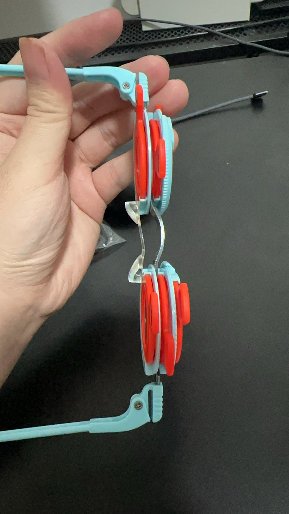

Uso de lentes de prueba para encontrar mi prescripción ideal de anteojos | Original, traducido por IA
 Fuente: Captura de pantalla propia
Fuente: Captura de pantalla propia
 Fuente: Captura de pantalla propia
-
Una computadora de escritorio suele estar más lejos de nuestros ojos que una laptop.
-
Para ver la pantalla del escritorio apenas con claridad, a menudo necesitamos anteojos personalizados.
-
Para mis lentes de prueba, uso -3.75 / -1.75 como corrección base de miopía, -0.25 / -0.25 y -0.50 / -0.50 como lentes incrementales o decrementales, y -1.00 / -1.00 para astigmatismo.
-
La montura de prueba tiene tres ranuras. Una forma común de usarlas es colocar el lente base de miopía en una ranura, un lente incremental o decremental en otra, y reservar la última ranura para el lente de astigmatismo. No se pueden combinar lentes de -0.25 y -0.50 al mismo tiempo, ya que una ranura se deja para la corrección del astigmatismo.
-
Las gafas de prueba cuestan alrededor de 48 CNY, y las lentes de prueba cuestan alrededor de 28 CNY en Pinduoduo en China.
-
Me arrepiento de no haberlos comprado y aprendido sobre ellos antes. Es tan simple. Si hubiera aprendido antes, podría haber evitado ir a la tienda para obtener recetas cinco veces en los últimos tres años, y habría tenido gafas más cómodas para el uso diario.